Синапс
Онлайн
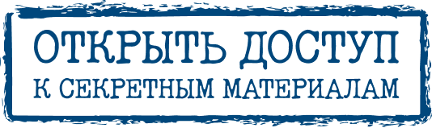
Желчные люди
Пройдите клинический кейс
Раздражительные.
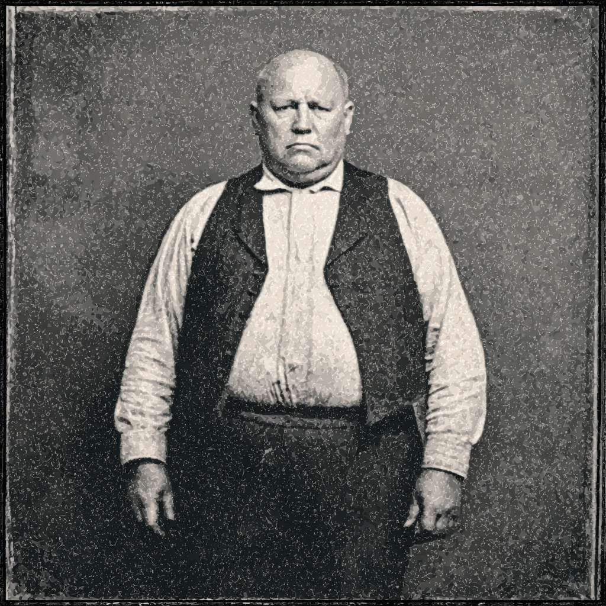
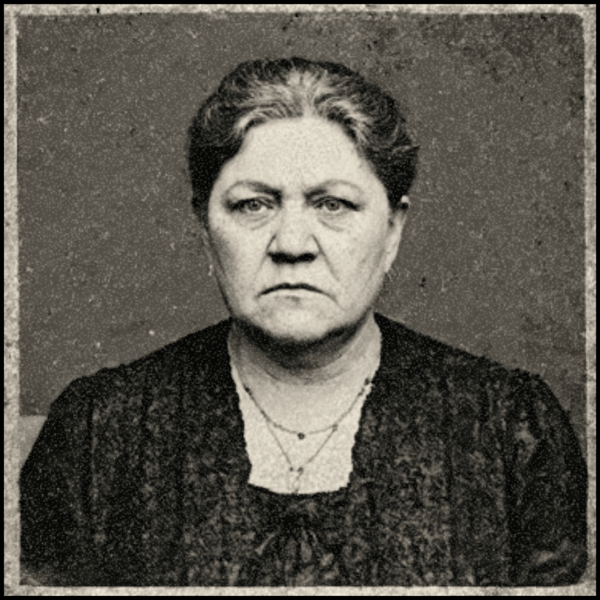
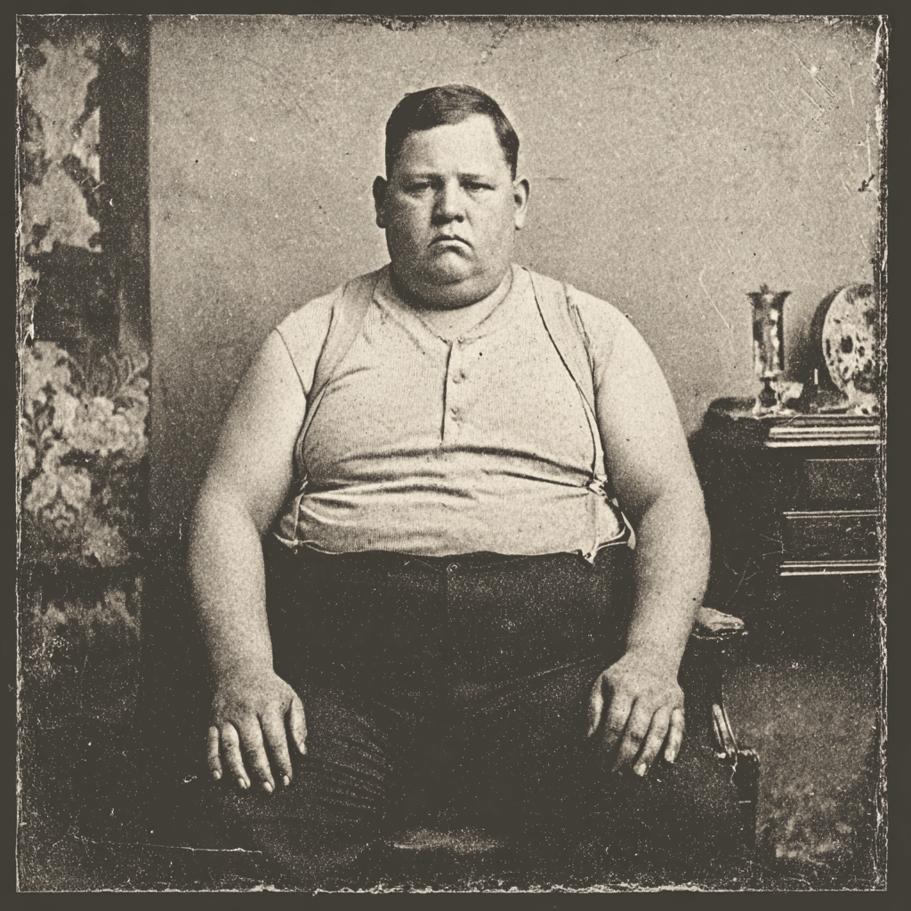
Вспыльчивые.
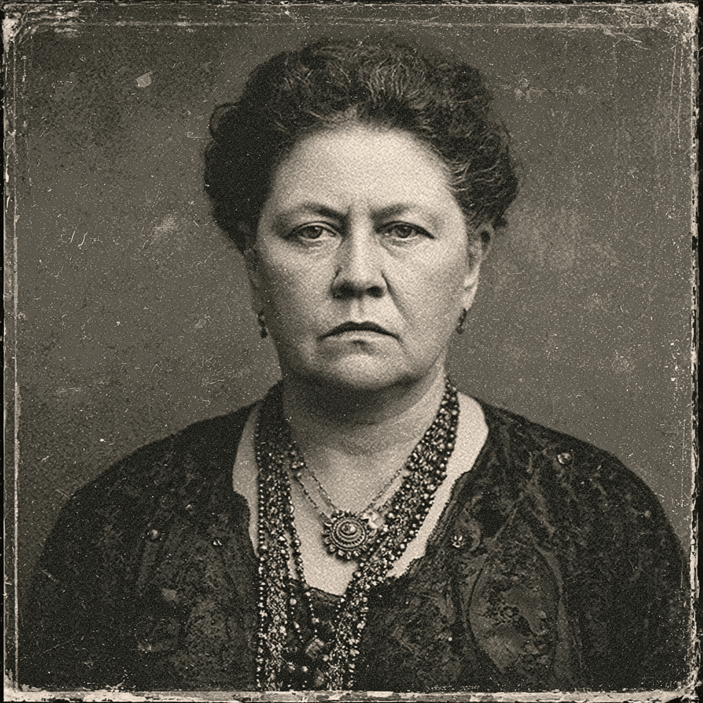
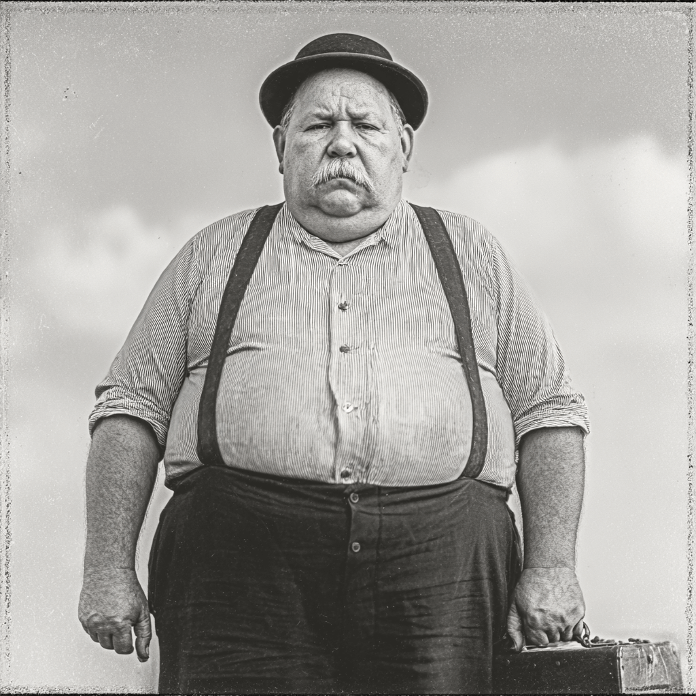
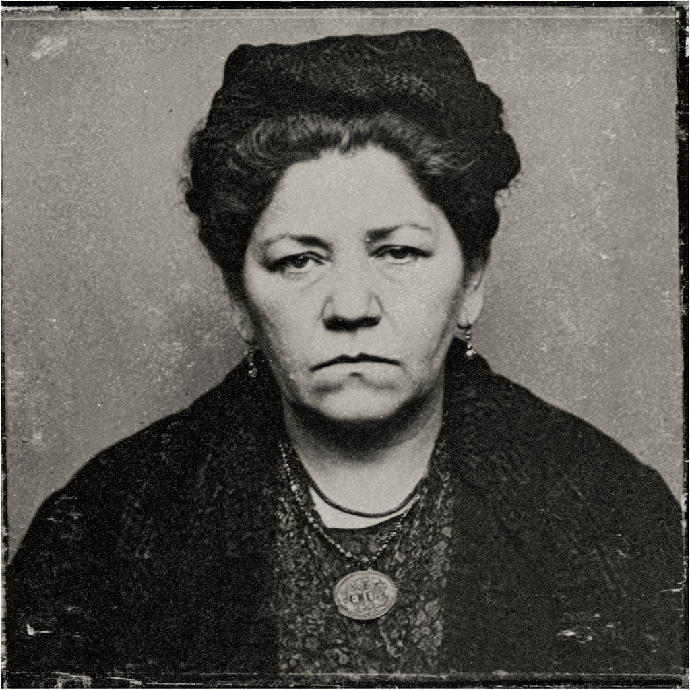
"С вечным недовольством в глазах".
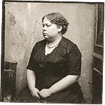
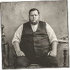
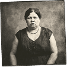
Замечали вы когда-нибудь, что многих гастроэнтерологических пациентов объединяет "трудный характер"?
Античные врачи видели причину в избытке жёлтой желчи, а современная наука говорит о метаболических нарушениях, гормональных сбоях и прямом влиянии состояния печени на нервную систему.
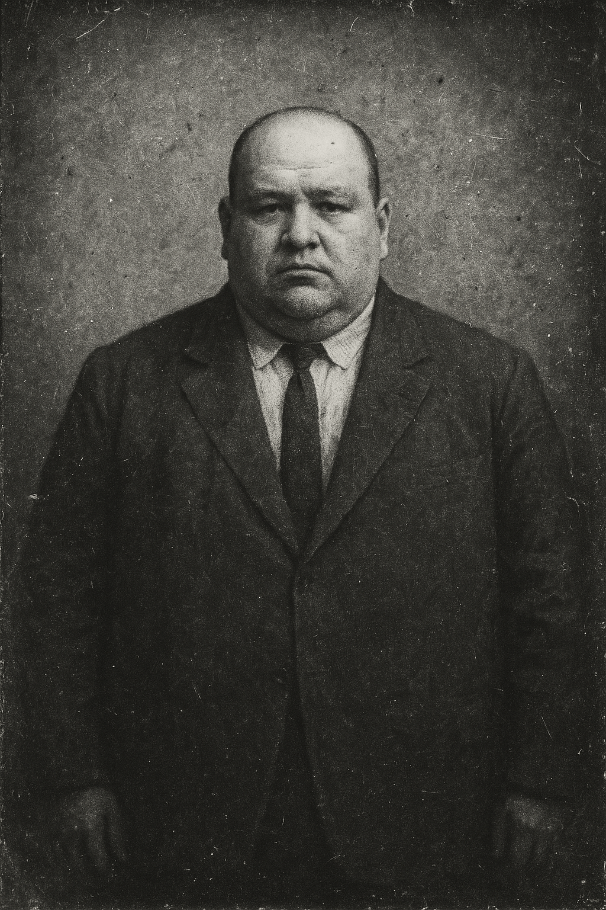
Отличается крайне неуравновешенным темпераментом, склонен к неадекватным вспышкам гнева по незначительным поводам. В общении резок, груб, зачастую высказывает недовольство в форме хамских замечаний или саркастических реплик. Взгляд угрюмый, с выражением хронического раздражения и подозрительности.
Проект "Желчные люди" призван увидеть и понять человека за симптомами.
Мы собрали серию интерактивных клинических кейсов, в которых наглядно показано, что иногда эмоциональное состояние пациента может быть таким же важным симптомом, как тяжесть в правом боку.
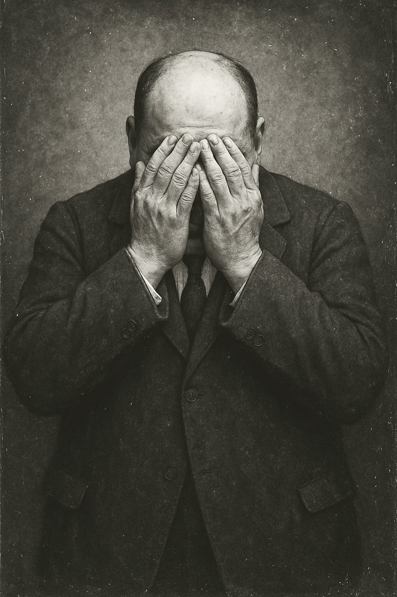
Почему здоровье печени так тесно связано с нашим эмоциональным состоянием?
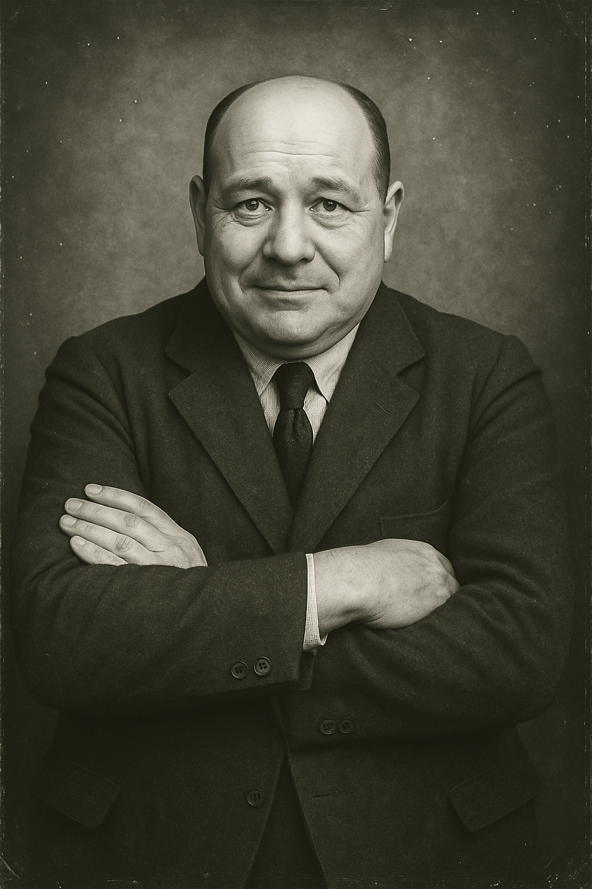
Как правильная терапия может вернуть не только здоровье, но и душевное равновесие?
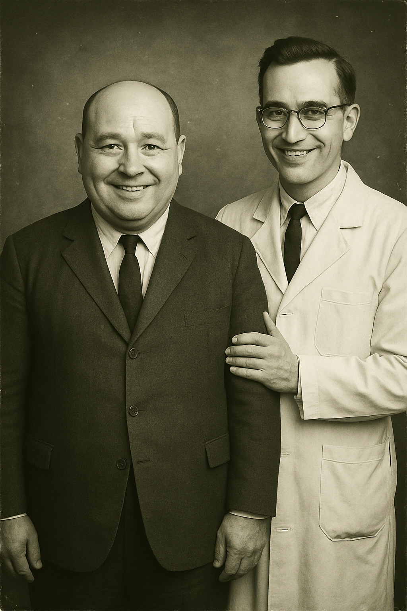
Что может сделать врач, чтобы помочь пациенту выйти из этого замкнутого круга?
"Желчные люди" — это не сухие отчёты, а живой диалог, в котором медицина учится
слышать не только анализы, но и человека.
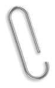
Цена стройности: желчная расплата
Скоро
После удаления: жизнь в потоке (желчи)
Скоро
Пациент с желтухой и любовью к авокадо. В чем подвох?
Скорая помощь для пациентов
Этот блок будет доступен только для врачей зарегистрированных в проекте Синапс Онлайн. Зарегистрируйтесь, чтобы первым узнать о появлении секретных материалов.
ЗарегистрироватьсяПолучите
памятку
юриста
медицинский юрист
И.О. Печерей
Памятка для врача — "Что делать,
если желчные люди на Вас
жалуются?"
Информация для специалистов здравоохранения